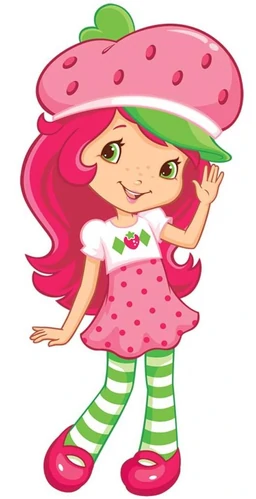
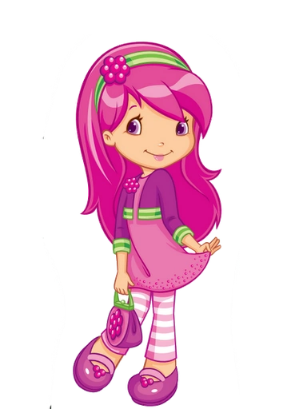
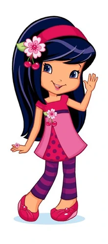
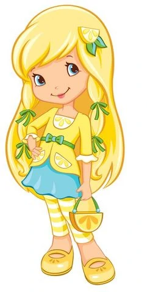
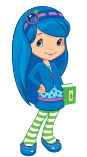

Seu cabelo é rosa magenta, seus olhos são verde e sua pele é branca. Ela tem sardas no meio de seus olhos.
é confiante, atenciosa, otimista, pensativa, engenhosa, entusiasmada e cheia de ideias.
Moranguinho é a melhor amiga de todos. Quando não está trabalhando em sua Cafeteria na Cidade das Frutinhas, ela recebe seus amigos para reuniões e lhes oferece ajuda e conselhos. Seu otimismo é contagioso e ela sempre vê grandes possibilidades em tudo e em todos!

cabelo é rosa escuro, seus olhos são violeta e sua pele é branca.
Ela é elegante, simpática, educada e se preocupa muito com suas modas, tanto quanto suas amigas.
A superestilosa Framboesa adora dar dicas de moda para todas as garotas da Cidade das Frutinhas . Ela também é dona da Nova Moda, uma boutique de roupas super fashion e descolada. Suas amigas podem contar com ela para tudo, inclusive, para montar os melhores looks da cidade.

Seu cabelo é preto-azulado, seus olhos são violeta e sua pele é pada.
Cerejinha é uma jovem talentosa cheia de paixão e alegre pela vida.
Cerejinha é a mais famosa moradora da Cidade das Frutinhas! Quando a cantora pop star está fora dos palcos, ela conta com todo o seu charm e e carisma para atuar como a professora de música favorita da cidade e ser uma amiga fabulosa de todos!

Seu cabelo é loiro, seus olhos são azul e sua pele é branca.
Ela é criativa, elegante, doce, feminina e pensa rápido quando se trata de resolver qualquer problema de cabelo.
Dona do Salão de Limão, ela é uma especialista com o pente, secador e maquiagem. É lá onde as meninas, os animaizinhos de estimação e os amigos do jardim incrementam o visual. Todos gostam de ficar perto dela, que adora manter a turminha atualizada sobre os “cuidados com a beleza” na Cidade das Frutinhas.

Seu cabelo e seus olhos são azul, sua pele é branca.
Ela é esperta, inteligente, e rápida para pensar sobre um problema em primeiro lugar.
Dona da livraria da Cidade das Frutinhas, a Amora Livros, ela é super esperta e interessada em aprender cada vez mais. O seu passatempo favorito é ler livros de todos os tipos, assim, ela sempre está bem informada e pode contar diferentes histórias para as suas amigas.